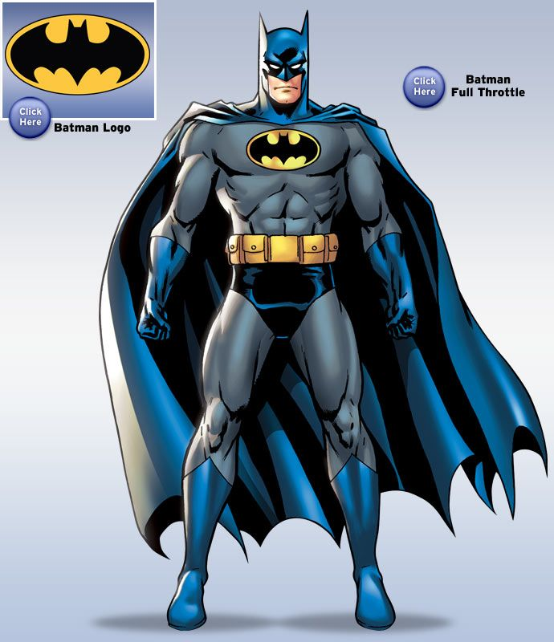

<div class="">
  <!--i class="close icon"></i-->
  <div class=" ui dividing header">
    Character Profile
  </div>
  <div class="image content">
    <div class="ui medium image">
      <!--img src="/images/avatar/large/chris.jpg"-->
    </div>
    <link href="semantic.css" rel="stylesheet" />
    <!--div class="scrolling content"-->
      <div class="ui link cards">
        <div class="card">
          <div class="image">
            
          </div>
          <div class="content">
            <div class="header">Batman</div>
            <div class="meta">
              <a>Major Enemies: The Joker, Riddler, Scarecrow, Mad Hatter .... </a>
            </div>
            <div class="description">
              Bruse Wayne was born to the the wealthy couple Martha and Thomas Wayne in Gotham City
            </div>
          </div>
          <div class="extra content">
            <span class="right floated">
              1st appeared in 1939
            </span>
            <span>
              
              
            </span>
          </div>
        </div>
      </div>
        
    <!--/div-->
  
  </div>
  <!--div class="actions">
    <div class="ui black deny button">
      Nope
    </div>
    <div class="ui positive right labeled icon button">
      Yep, that's me
      <i class="checkmark icon"></i>
    </div>
  </div-->
</div>

